To help mimic a wide range of use cases, mocks can be created in a number of ways.
The different mocking types available are as follows:
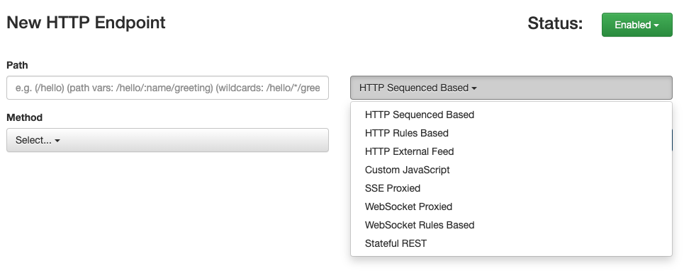
Sequence based
Sequence based mocks work by sequentially returning responses from a list back to the caller one at a time.
In the example below, this mock returns 3 different responses.
The
1st call to the mock will result with a 200 response with the json message { "name" : "bob" }.
A
2nd call returns a 200, with { "name" : "mary" } as the response body.
Lastly a
3rd call results in a 500 response error.
Making a
4th call will simply return to the start of the list and so forth.
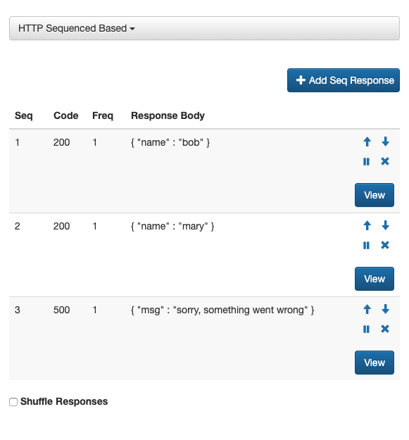
Should you need to return a particular response more then once, then it is possible to increase the
frequency.
(note
Freq is set to
1 in the above example, which means each response is only returned once as we move down the list)
Finally it is possible to enable a
shuffle mode which randomises responses returned from the list.
Rules based
Rules based mocks allow you to set logical conditions, so as to determine which response should be returned to the caller.
(note this is done using a visual editor and so does not require any coding skills)
For example the following rule based mock
GET /pets/:name can return 3 possible responses.
The left side of the screen highlights the
1st possibility which is 404 response with a json message { "msg": "sorry no match was found" }.
This is in fact the
default response returned where a no matches were successfully made on a rule.
The right hand side of the screen, lists the 2 other responses, which are respectively returned when their rule is matched.
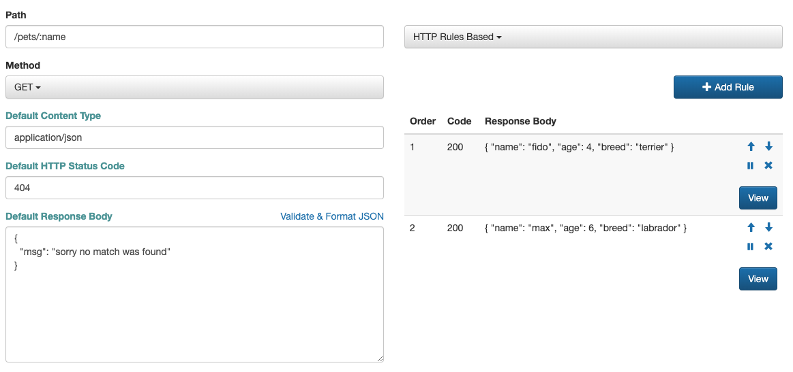
Below gives a breakdown of how a rule is formed.
The left hand side, details the response returned when the rule successfully triggered.
The right hand side, lists the logical conditions required to trigger the rule.
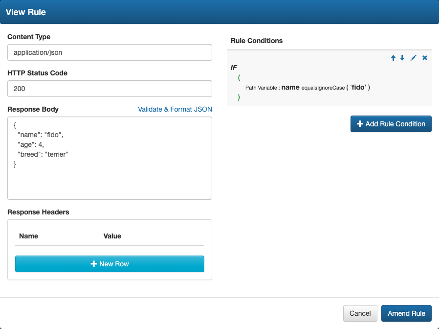
Lastly, this is the visual editor used to create logical conditions within a rule.
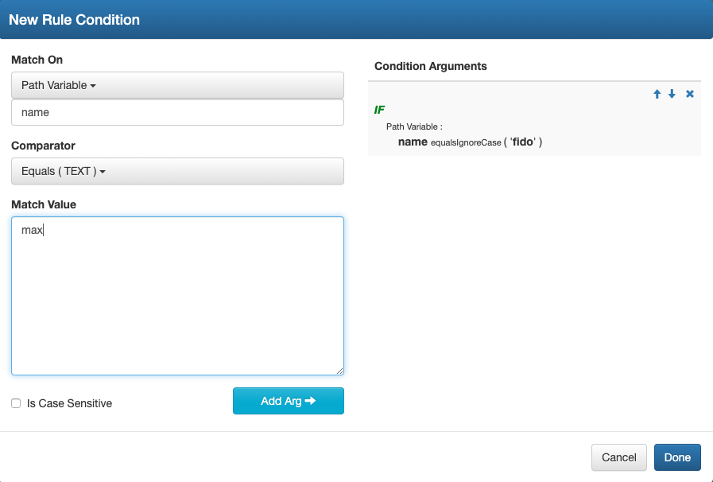
JavaScript based
For those looking for greater expressive control, sMockin allows you to programmatically define mocks using JavaScript.
Selecting the Custom JavaScript mock type, opens a visual editor where you can access the inbound
request and define your
response
within the
handleResponse function.
The
handleResponse function itself is mandatory, but can actually be left blank (per the below example) returning just the
response object.
In this event, the mocked endpoint simply will return a 404 response by default when called.
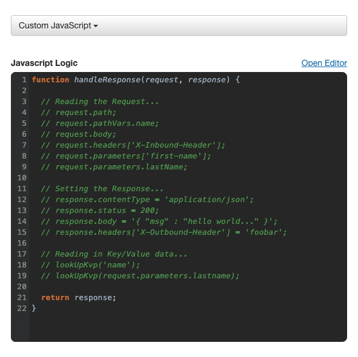
The example below demonstrates how you can write logic around the inbound request, using this to determine the outcome of the response.
In this instance, there is a mocked endpoint
GET /hello/:name, which returns a json response based on values from a
greeting request parameter
and
name path variable.
We can expect the call
GET /hello/joe?greeting=ola to return
{ "msg" : "ola joe" }
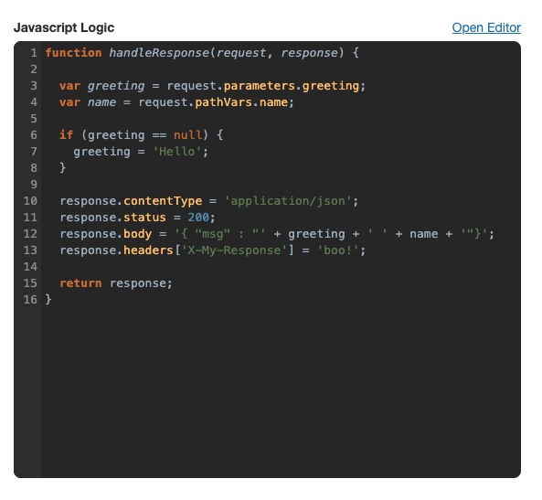
Externally Fed (Proxy)
Externally Fed mock types, allow responses to be fed back to the caller in real time from an external source.
Mock responses can be fed to the mock server either through the sMockin UI or via a web service (i.e POST /proxy/{MOCK_ID}), where they are then added to a queue.
To give an example, say the caller invokes the
GET /wait endpoint described below, the mock server will check the queue
for a response and return the first result it finds.
In the event a response is not available from the queue, the caller will wait (i.e long poll) until one is added to the
queue via the dedicated input web service.
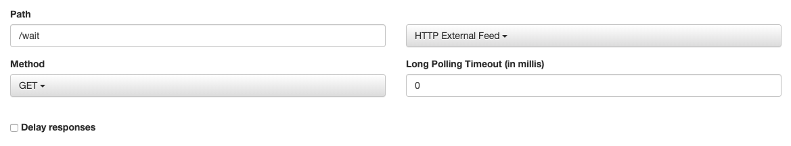
Below is an example of feeding a response to the queue of the
GET /wait mock via the
POST /proxy/{MOCK_ID} web service:
curl -H "Content-Type: application/json" -X POST -d '{"path":"/wait", "method":"GET", "httpStatusCode":200, "responseContentType":"application/json", "body":"{\"name\":\"Hello, the wait is now over\"}"}' http://localhost:8000/proxy/3f737d4a-c236-4c30-9750-4d2ccb36955d
Websocket (Proxy)
Similar to the Externally Fed mock type, but specific to callers who need a Web Socket client connection.
Mock responses are fed to the mock server via an input console available when viewing the Websocket mock in the UI.
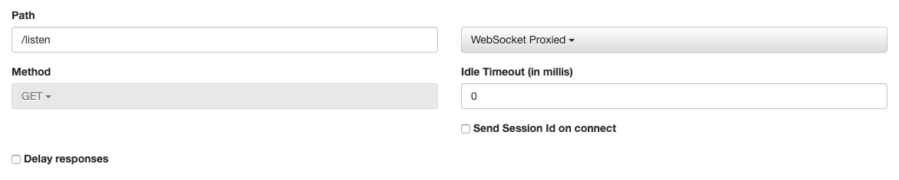
Server Sent Event (SSE) - (Proxy)
Similar to the Externally Fed & WebSocket mock types, but specific to callers who need a SSE client connection.
Mock responses are fed to the mock server via an input console available when viewing the SSE mock in the UI.
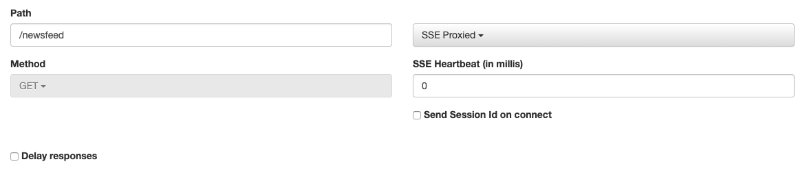
WebSocket Rules Based
Rules Based WebSockets allow you to define rules to determine when and what data to push to any connected clients.
To give an example the following mock
GET /ws/pets has 1 rule set up to push a JSON list of appointments, whenever
a connecting client sends the message
APPOINTMENTS.
All other messages sent by a client result with the message
{ "msg" : "Unknown Command" } being pushed back.
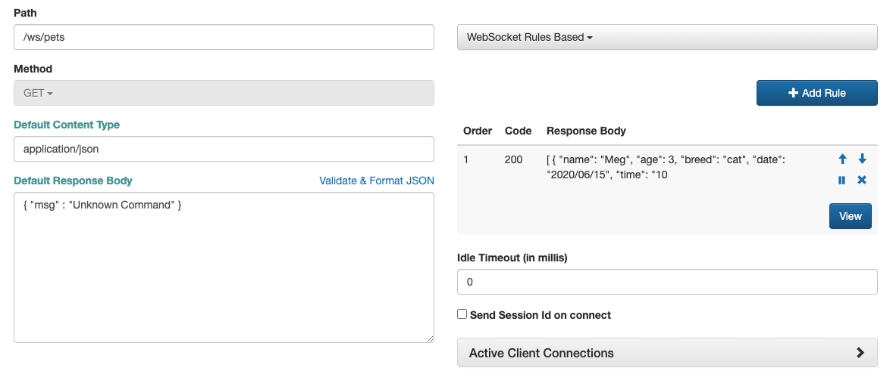
Below is a breakdown of rule definition itself.
The Json response body (of appointments) returned by the rule is shown on the left, while the right
shows the rule condition (i.e the request body sent by the connected client equals 'APPOINTMENTS').
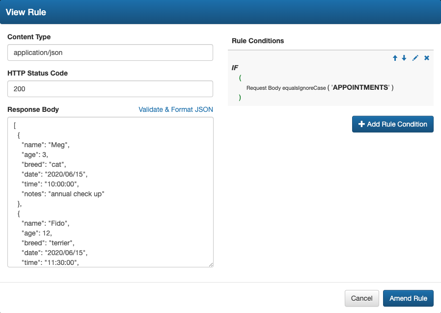
Stateful REST
Stateful REST mocks cache and manage JSON data state based on the RESTful instructions they receive, helping to mimic 'real world' data behavior.
When selecting a Stateful REST mock, sMockin will automatically create a suite of endpoints covering the common
GET, POST, PUT, DELETE &
PATCH actions.
To illustrate this consider the below endpoint
/staff which is configured with an initial json data state consisting of 2 records. If left, blank then this will default to an empty json list.
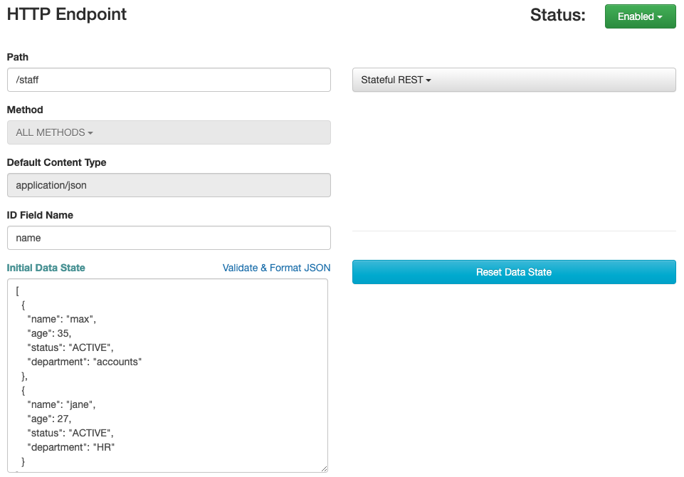
In this example the field
name is specified as the unique record identifier. If left blank, then sMockin will default this to 'id' and auto-populate this field using UUIDs during POST operations.
The
Reset Data State button can be used at any point to return the data state back to it's original state.
A call to
GET /staff shows the
Initial Data State from above being returned
curl -i -X GET http://localhost:8001/staff
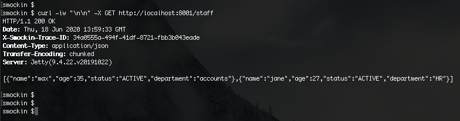
Additional staff members
Faye and
Sally can be added to the data state by calling
POST /staff
curl -i -X POST http://localhost:8001/staff -d '{ "name": "Faye", "age": 38, "status": "ACTIVE", "department": "Legal" }'
curl -i -X POST http://localhost:8001/staff -d '{ "name": "Sally", "age": 45, "status": "ACTIVE", "department": "Senior Management" }'
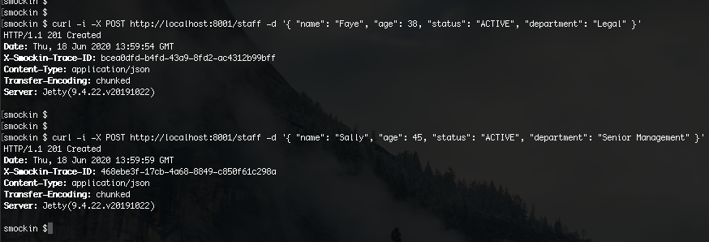
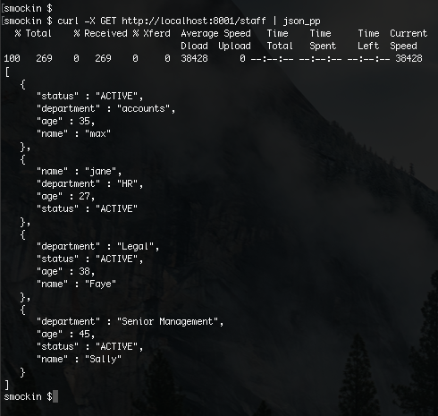
The employee
Max can be removed using
DELETE /staff/:name
curl -i -X DELETE http://localhost:8001/staff/max
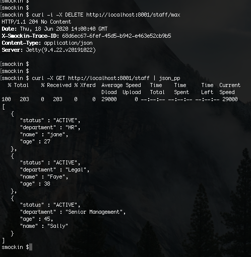
Last of all
Sally can be moved to the 'Board Of Directors' using
PATCH /staff/:name
curl -i -X PATCH http://localhost:8001/staff/Sally -d '{ "op" : "REPLACE", "path" : "/department", "value" : "Board Of Directors" }'
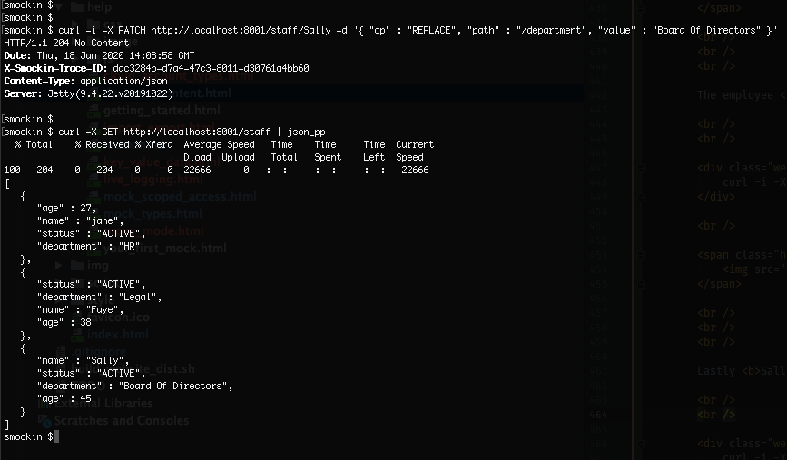